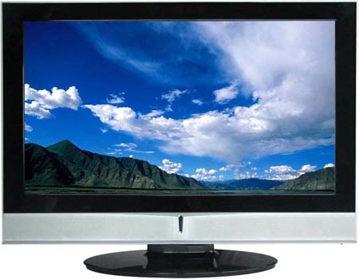

Tweet
Tweet
Summing up, the scanner is the eye of the computer. However, the scanner is only part of the solution when it comes to OCR. It also takes a very intelligent piece of software to recognize text — the OCR software! Indeed, scanning a document means that an image of that document is stored in the computer’s memory (or on the hard disk). That’s just the first phase; at this point, there is no recognition yet, and no intelligence was used at any stage.
Compare bitmaps to the images on a television screen. A television is a magic box that paints colored pixels on a display. Actors, sets, objects, subtitles, none of this exists inside the television, these abstract entities only exist in the mind of the spectator! The TV may bring you the news program, but it takes a human brain to recognize any news anchor, title card, map, graph etc. (Pets may stare at a TV screen, but no dog or cat has ever recognized something that happened on television.)
You may witness a very nice sky on the TV screen below, but glue your nose to the TV set and you’ll see that the television is just painting points on the flatscreen. (There’s a difference between TV images and scans: TVs and other displays have space in between the individual pixels, image files don’t have this. A special unit of measure, the “dot pitch”, indicates how far apart the dots are on a display or TV screen.)

Watching TV has a basic analogy with character recognition: the OCR software finds shapes in an image acquired by the scanner as the human brain interprets shapes in the image transferred to it by the person’s eyes.
An important difference is the sharpness of the images. For many years, (analogue) American TV sets used some 525 horizontal pixels (the “ NTSC” standard) and European TV sets had 625 horizontal pixels (the “PAL” standard). Sure, its digital successor HDTV has the substantially higher horizontal resolution of 1,920 pixels!
High-definition TV is actually still low, isn’t it? After all, laser printers nowadays are 600 dpi machines: an infinitely superior resolution where 600 individual dots are used to form a line just 1 inch (2.54 cm.) long — a tiny surface compared to a TV screen that’s now easily over 40” (102 cm.) diagonally!
(So how about text recognition? For OCR purposes, images with a 300 dpi resolution are used.)
The text is in the eye of the beholder — The intelligence of OCR — Bitmaps only take you so far — 90,000 kids on the block — OCR is the ultimate data cruncher! — OCR deserves recognition
Home page — Intro — Scanners — Images — History — OCR — Languages — Accuracy — Output — BCR — Pen scanners — Sitemap — Search — Contact – Feedback